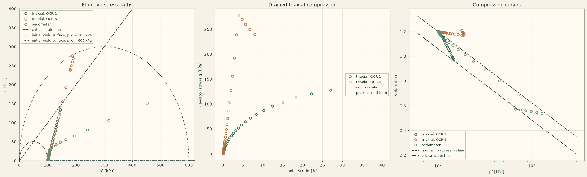
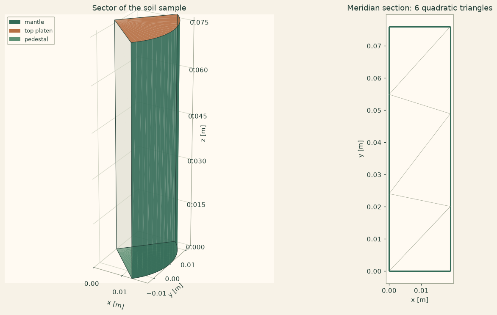

Docs › Examples › Triaxial and oedometer tests with Modified Cam-Clay
Soil plasticity · 2D-axisymmetric
Triaxial and oedometer tests with Modified Cam-Clay
A normally consolidated and a heavily overconsolidated clay sample are sheared in drained triaxial compression, and a third sample is compressed and unloaded in an oedometer.
Run locally with OneSimulation. The example downloads are free. Running them requires an activated runtime. Runtime Alpha 0.2.1a7 · CPython 3.13 on macOS (Apple Silicon), Ubuntu 22.04 (x86-64), and Windows x64. Installation and activation · View pilot plans. Scope of the reference checks.

What it computes
OneSimulation reads a sector of the cylindrical sample from a STEP file, cuts its meridian section and solves axisymmetric small-strain equilibrium with the Modified Cam-Clay model at every quadrature point, driven by the top platen under constant cell pressure or inside a rigid ring. The script that builds the STEP file comes with the notebook.
What it checks
The drained stress path follows q = 3(p' - p'_0) within 0.2 Pa and the normally consolidated sample approaches the critical state (q/p' = 0.953 at 40 % strain); the overconsolidated peak reaches 277 kPa against 280.5 kPa from the closed form; the state relation holds to machine precision in all tests and the oedometer slopes are λ = 0.2497 and κ = 0.0500.
Geometry
The notebook starts at the import of the CAD file triaxial_oedometer_cam_clay.step: STEP (AP242), readable by any CAD program, with the names of the faces that the boundary conditions use. Put it next to the notebook.

The geometry script
The script triaxial_oedometer_cam_clay_geometry.py builds the geometry with the CAD objects of OneSimulation and writes the file. Change a dimension there, run it, and run the notebook again.
"""Geometry of the OneSimulation example "Triaxial and oedometer tests with Modified Cam-Clay".
Builds a 90-degree sector of a cylindrical soil sample (38 mm diameter, 76 mm high, axis along z)
with the CAD objects of OneSimulation, centred on the x axis, and writes
triaxial_oedometer_cam_clay.step. The example computes on its meridian section y = 0. The faces
are named mantle, bottom (z = 0) and top (z = 76 mm).
"""
import numpy as np
from onesim.cad.d3 import Cylinder
sample = Cylinder(radius=0.019, length=0.076)
sector = sample.sector(
np.pi / 2, axis=(0.0, 0.0, 1.0), start=(np.cos(-np.pi / 4), np.sin(-np.pi / 4), 0.0)
)
sector = sector.grouped(
mantle=sector.select(faces=lambda face: face.kind == "cylinder"),
bottom=sector.select(
faces=lambda face: abs(face.center[2]) < 1e-9 and face.kind == "plane"
),
top=sector.select(
faces=lambda face: abs(face.center[2] - 0.076) < 1e-9 and face.kind == "plane"
),
)
sector.save("triaxial_oedometer_cam_clay.step")The notebook
The complete notebook, cell by cell. Run it to produce the figures and the comparison printout.
In a drained triaxial test the cell pressure stays constant while the sample is shortened, so the effective stress path rises with slope 3 in the \(p'\)–\(q\) plane, \(q=3(p'-p'_0)\). Where it meets the Modified Cam-Clay yield ellipse
depends on the stress history. A normally consolidated clay (\(p_c=p'_0\)) yields at once, hardens and contracts until it reaches the critical state \(q=Mp'\). A heavily overconsolidated clay meets the ellipse on its "dry" side above the critical state line: it peaks, dilates, softens and falls back along the same stress path to the critical state. In the oedometer the sample cannot expand sideways; it compresses one-dimensionally along a normal compression line of the same slope \(\lambda\) in the \(e\)–\(\ln p'\) plane.
Setup. A cylindrical sample of 38 mm diameter and 76 mm height, \(\lambda=0.25\), \(\kappa=0.05\), \(M=1.0\), \(\nu=0.3\), \(e_0=1.2\), all starting at \(p'_0=100\) kPa. Triaxial tests: \(p_c=100\) kPa (normally consolidated) and \(p_c=600\) kPa (overconsolidation ratio 6), sheared to 40 % and 8 % axial strain. Oedometer: \(p_c=100\) kPa, compressed to 30 % axial strain and unloaded to 28.5 %. The sample comes from the CAD file triaxial_oedometer_cam_clay.step, written by triaxial_oedometer_cam_clay_geometry.py with the CAD objects of OneSimulation; the computation uses its meridian section.
| edge of the section | triaxial | oedometer |
|---|---|---|
mantle | cell pressure 100 kPa | radial displacement 0 |
top | axial displacement | axial displacement |
bottom | axial displacement 0 | axial displacement 0 |
Reference. (1) Stress path \(q=3(p'-p'_0)\). (2) Critical state of the drained test: \(p'_f=3p'_0/(3-M)=150\) kPa, \(q_f=Mp'_f\). (3) Peak of the overconsolidated sample where the path meets the initial ellipse: \((9/M^2+1)p'^2-(18p'_0+p_c)p'+9p'^2_0=0\), larger root. (4) State of the clay: with plastic volume change only through the cap and elastic change along the swelling line, the void ratio at any yielding state is \(e=e_0-(\lambda-\kappa)\ln(p_c/p_{c,0})-\kappa\ln(p'/p'_0)\) with \(p_c=p'(1+\eta^2/M^2)\), \(\eta=q/p'\) (Wood, Soil Behaviour and Critical State Soil Mechanics, Cambridge 1990, Ch. 6-7).
import numpy as np
from onesim.cad.exchange import load
from onesim.materials.solids import ModifiedCamClay
from onesim.meshing import TriangularMesher
from onesim.numerics.linear import SparseDirect
from onesim.numerics.nonlinear import DampedNewton
from onesim.physics.solid_mechanics import SmallStrainSolid
from onesim.visualization import plots, theme
theme.set()Geometry and mesh
load returns the sector of the sample with its named faces; section cuts the meridian plane.
sample = load("triaxial_oedometer_cam_clay.step")
faces = sample.boundaries
meridian = sample.section((0, 1, 0), origin=(0, 0, 0))
edges = meridian.boundaries
height = sample.size[2]
mesh = TriangularMesher(target_size=0.08).generate(meridian)
fig = plots.figure(1, 2, size=(12, 6.5))
plots.geometry(
sample,
selection={
"mantle": faces.mantle,
"top platen": faces.top,
"pedestal": faces.bottom,
},
labels=False,
camera=plots.Camera(elevation=25, azimuth=-60),
title="Sector of the soil sample",
ax=fig[0],
)
plots.mesh(
mesh,
groups=("all",),
legend=False,
title=f"Meridian section: {mesh.cell_count} quadratic triangles",
ax=fig[1],
)
plots.show()Model
Three runs of SmallStrainSolid with axisymmetric kinematics and a ModifiedCamClay material point, driven by the top platen. Axial strain grows in logarithmic steps; the oedometer is unloaded afterwards.
compression, swelling, slope, initial_void, start = 0.25, 0.05, 1.0, 1.2, 100e3
clay = lambda cap: ModifiedCamClay(
compression_index=compression,
swelling_index=swelling,
critical_slope=slope,
poisson_ratio=0.3,
initial_void_ratio=initial_void,
preconsolidation_pressure=cap,
initial_pressure=start,
)
newton = DampedNewton(
linear_solver=SparseDirect(),
relative_tolerance=1e-7,
absolute_tolerance=1e-5,
maximum_iterations=40,
)
shear = {
"triaxial, OCR 1": np.r_[0.0, np.geomspace(2e-4, 0.4, 40)],
"triaxial, OCR 6": np.r_[0.0, np.geomspace(2e-4, 0.08, 36)],
}
oedometer = np.r_[0.0, np.geomspace(2e-4, 0.3, 30), np.linspace(0.297, 0.285, 5)]
platen = lambda path: (lambda x, y, t: -height * path[int(round(t))])
tests = {
"triaxial, OCR 1": (100e3, shear["triaxial, OCR 1"], (edges.mantle, (-start, 0.0))),
"triaxial, OCR 6": (600e3, shear["triaxial, OCR 6"], (edges.mantle, (-start, 0.0))),
"oedometer": (100e3, oedometer, None),
}
results = {
name: SmallStrainSolid(
youngs_modulus=1.0,
poisson_ratio=0.3,
kinematics="axisymmetric",
material_point=clay(cap),
).solve(
mesh=mesh,
times=np.arange(len(path), dtype=float),
order=2,
nonlinear=newton,
displacements=((edges.bottom, "z", 0.0), (edges.top, "z", platen(path)))
+ (((edges.mantle, "r", 0.0),) if cell is None else ()),
tractions=() if cell is None else (cell,),
)
for name, (cap, path, cell) in tests.items()
}
states = {
name: [step[0][0] for step in result.material_history]
for name, result in results.items()
}
p = {
name: np.array([state.mean_pressure for state in history])
for name, history in states.items()
}
q = {
name: np.array([state.deviatoric_stress for state in history])
for name, history in states.items()
}
void = {
name: initial_void
- (1 + initial_void) * np.array([-sum(state.strain[:3]) for state in history])
for name, history in states.items()
}
caps = {
name: np.array([state.preconsolidation_pressure for state in history])
for name, history in states.items()
}Comparison with the closed forms
Stress path, peak and critical state of the triaxial tests, the state relation in every yielding step of all three tests, and the slopes and lateral stress ratio of the oedometer. The normally consolidated sample approaches the critical state asymptotically. The overconsolidated sample softens after its peak; the softening does not stay uniform in the sample (the strain starts to localise), so beyond the peak the closed forms for a uniform sample only describe the state relation, not the stress path.
failure = 3 * start / (3 - slope)
peak = (
(18 * start + 600e3)
+ np.sqrt((18 * start + 600e3) ** 2 - 4 * (9 / slope**2 + 1) * 9 * start**2)
) / (2 * (9 / slope**2 + 1))
state_line = (
lambda name: initial_void
- (compression - swelling) * np.log(caps[name] / caps[name][0])
- swelling * np.log(p[name] / start)
)
for name in ("triaxial, OCR 1", "triaxial, OCR 6"):
print(
f"{name}: stress path off q = 3(p' - p'_0) by at most {np.abs(q[name] - 3 * (p[name] - start)).max():.2e} Pa; at {100 * shear[name][-1]:.0f} % axial strain "
f"p' = {p[name][-1] / 1e3:.2f} kPa, q/p' = {q[name][-1] / p[name][-1]:.4f} (critical state: {failure / 1e3:.0f} kPa, M = {slope})"
)
print(
f"peak of the overconsolidated sample: q = {q['triaxial, OCR 6'].max() / 1e3:.1f} kPa at p' = {p['triaxial, OCR 6'][np.argmax(q['triaxial, OCR 6'])] / 1e3:.1f} kPa "
f"(closed form q = {3 * (peak - start) / 1e3:.1f} kPa at p' = {peak / 1e3:.1f} kPa)"
)
for name in tests:
yielding = np.r_[False, np.abs(np.diff(caps[name])) > 1e-9 * caps[name][0]]
pressure_cap = p[name] * (1 + (q[name] / p[name]) ** 2 / slope**2)
print(
f"{name}: state relation e(p', p_c) holds within {np.abs(void[name] - state_line(name)).max():.1e}; "
f"p_c on the yield ellipse within {np.abs(caps[name][yielding] / pressure_cap[yielding] - 1).max() if yielding.any() else 0:.1e}"
)
oed = "oedometer"
radial = np.array([-state.stress[0] for state in states[oed]])
axial = np.array([-state.stress[1] for state in states[oed]])
top = int(np.argmax(oedometer))
print(
f"oedometer: slope of e over ln p' in the last loading steps {-(void[oed][top] - void[oed][top - 5]) / np.log(p[oed][top] / p[oed][top - 5]):.4f} (λ = {compression}), "
f"on unloading {-(void[oed][-1] - void[oed][top]) / np.log(p[oed][-1] / p[oed][top]):.4f} (κ = {swelling})"
)
print(
f"oedometer: lateral stress ratio K0 = σ'_r/σ'_a = {radial[top] / axial[top]:.3f} in normal compression "
f"(Jaky's estimate 1 - sin φ' = {1 - 3 * slope / (6 + slope):.3f} with sin φ' = 3M/(6+M)), {radial[-1] / axial[-1]:.3f} after unloading"
)Figure
Left the stress paths of all three tests with the critical state line and the initial yield ellipses; middle the deviator stress against the axial strain of the triaxial tests; right the compression curves in the \(e\)–\(\ln p'\) plane with the normal compression and critical state lines. The normally consolidated clay contracts and hardens towards the critical state; the overconsolidated clay peaks on the dry side of its yield surface and softens.
ellipse = lambda cap: (
lambda pressure: slope * np.sqrt(np.maximum(pressure * (cap - pressure), 0.0))
)
pressures = np.linspace(0.0, 620e3, 400)
line = np.geomspace(60e3, 3e6, 200)
normal = lambda pressure: initial_void - compression * np.log(pressure / start)
fig = plots.figure(1, 3, size=(20, 6))
plots.line(
points={name: (p[name] / 1e3, q[name] / 1e3) for name in tests},
reference={
"critical state line": (pressures / 1e3, slope * pressures / 1e3),
"initial yield surface, p_c = 100 kPa": (
pressures / 1e3,
ellipse(100e3)(pressures) / 1e3,
),
"initial yield surface, p_c = 600 kPa": (
pressures / 1e3,
ellipse(600e3)(pressures) / 1e3,
),
},
xlimits=(0, 620),
ylimits=(0, 400),
xlabel="p' [kPa]",
ylabel="q [kPa]",
title="Effective stress paths",
legend="upper left",
ax=fig[0],
)
plots.line(
points={
name: (100 * shear[name], q[name] / 1e3)
for name in ("triaxial, OCR 1", "triaxial, OCR 6")
},
hlines={
"critical state": slope * failure / 1e3,
"peak, closed form": 3 * (peak - start) / 1e3,
},
xlabel="axial strain [%]",
ylabel="deviator stress q [kPa]",
title="Drained triaxial compression",
legend="right",
ax=fig[1],
)
plots.line(
points={name: (p[name] / 1e3, void[name]) for name in tests},
reference={
"normal compression line": (line / 1e3, normal(line)),
"critical state line": (
line / 1e3,
normal(line) - (compression - swelling) * np.log(2),
),
},
scale="logx",
xlabel="p' [kPa]",
ylabel="void ratio e",
title="Compression curves",
legend="lower left",
ax=fig[2],
)
plots.show()Going further
Run the tests undrained by coupling the clay to pore-water pressure, vary the overconsolidation ratio to find where contraction turns into dilation, or replace the oedometer ring by a soft lateral support.